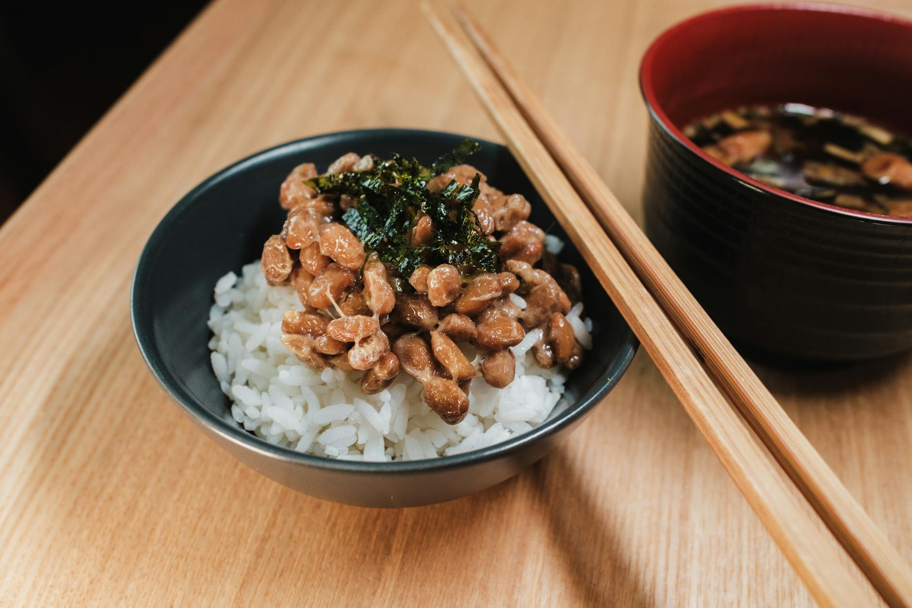

Can Fermented Foods Improve Your Gut?
Key takeaways
- Ever thought about what's happening inside your digestive system?
- It's a bustling ecosystem of trillions of microbes, collectively known as your gut microbiome.
- Focus on: Your Gut: More Than Just Digestion.

Your Gut: More Than Just Digestion
Ever thought about what's happening inside your digestive system? It's a bustling ecosystem of trillions of microbes, collectively known as your gut microbiome. This complex community plays a surprisingly big role in everything from nutrient absorption to immune function and even your mood. Keeping it happy and balanced is key to overall well-being.
While the idea of a healthy gut might seem complicated, incorporating a few key elements into your diet and lifestyle can make a significant difference. Let's dive into three important areas: fiber, fermented foods, and meal timing.
The Power of Fiber
Fiber is often hailed as a superhero for digestion, and for good reason. It's the indigestible part of plant-based foods that helps keep things moving smoothly through your digestive tract. But it's not just about regularity; fiber also acts as food for your beneficial gut bacteria. When these good microbes feast on fiber, they produce short-chain fatty acids (SCFAs) like butyrate, which are crucial for gut lining health and have anti-inflammatory properties.
Think of it like this: without enough fiber, your gut bacteria don't have their favorite snacks, and a less happy microbiome can lead to various digestive issues.
Boosting Your Fiber Intake
- Aim for a variety of fruits, vegetables, whole grains, and legumes.
- Start your day with oatmeal or whole-wheat toast.
- Snack on apples, pears, or a handful of almonds.
- Add beans or lentils to soups and salads.
For example, Sarah, a busy professional, noticed she often felt sluggish and bloated. By gradually increasing her intake of fruits, vegetables, and whole grains, and making sure to drink plenty of water, she found her digestion improved significantly within a few weeks. She started by adding a side salad to her lunch and swapping her usual white bread for whole-wheat.
Fermented Foods: Nature's Probiotic Powerhouses
Fermented foods are made through a process where microorganisms, like bacteria and yeast, break down food components. This process not only preserves the food but also creates beneficial compounds, including probiotics – live microorganisms that can contribute to a healthy gut microbiome when consumed in adequate amounts.
Incorporating foods like yogurt, kefir, sauerkraut, kimchi, and tempeh can introduce a diverse range of beneficial bacteria to your gut. These can help improve digestion, boost nutrient absorption, and potentially support immune function.
Adding Fermented Foods to Your Diet
- Start small: If you're new to fermented foods, begin with a small serving to see how your body reacts.
- Choose wisely: Look for products that are unpasteurized to ensure the live cultures are present.
- Variety is key: Try different types of fermented foods to get a broader spectrum of beneficial microbes.
Consider adding a dollop of plain yogurt to your breakfast, a side of sauerkraut to your sandwich, or a small bowl of kimchi with your dinner.
The Role of Meal Timing
While what you eat is crucial, when you eat can also influence your gut health. Consistent meal patterns can help regulate your digestive system. Eating large meals close to bedtime, for instance, can disrupt sleep and put extra strain on your digestive organs when they should be resting.
Giving your digestive system breaks throughout the day and allowing adequate time between your last meal and bedtime can support better digestion and sleep quality. This doesn't mean you need to follow strict intermittent fasting, but rather be mindful of your eating schedule.
Tips for Mindful Meal Timing
- Try to eat your meals at roughly the same times each day.
- Aim to finish eating at least 2-3 hours before you go to bed.
- Listen to your body's hunger and fullness cues.
Consistent eating patterns can help sync your body's natural rhythms, potentially leading to improved digestion and energy levels. Learn more about establishing healthy eating habits here.
Putting It All Together: A Simple Checklist
Ready to give your gut some love? Here’s a quick checklist to get you started:
Actionable Checklist
- Increase Fiber: Add one extra serving of fruits or vegetables to your daily meals.
- Try Fermented Foods: Incorporate a small serving of plain yogurt, kefir, or sauerkraut a few times this week.
- Mind Your Timing: Aim to finish your last meal at least two hours before bedtime.
- Hydrate: Drink plenty of water throughout the day to support fiber digestion.
For more on gut-friendly recipes, check out this article. Understanding your gut microbiome is an ongoing journey, and small, consistent changes can lead to significant improvements over time. Explore the connection between diet and gut health.
Common Mistakes to Avoid
When focusing on gut health, it's easy to fall into a few common traps:
- Overhauling your diet overnight: Sudden, drastic changes can overwhelm your digestive system. Introduce new foods gradually.
- Relying solely on supplements: While supplements can be helpful, they shouldn't replace a balanced diet rich in whole foods. Focus on getting nutrients from food first.
- Ignoring individual responses: What works for one person might not work for another. Pay attention to how your body feels and adjust accordingly.
- Forgetting hydration: Fiber needs water to work effectively. Dehydration can lead to constipation, even with a high-fiber diet.
Remember, consistency is more important than perfection. For more tips on building healthy habits, explore our resources.
Frequently Asked Questions
Can I eat fermented foods if I'm lactose intolerant?
Many fermented dairy products, like yogurt and kefir, are lower in lactose than their unfermented counterparts because the fermentation process breaks down lactose. Some individuals find they can tolerate them. Non-dairy fermented foods like sauerkraut, kimchi, and tempeh are also excellent options.
How much fiber do I really need?
General recommendations for adults are around 25 grams per day for women and 38 grams per day for men, though individual needs can vary. The focus should be on increasing intake from a variety of whole food sources.
Is it okay to eat late at night?
While it's best to avoid large meals close to bedtime, a small, easily digestible snack might be okay if you're truly hungry. However, establishing a consistent eating schedule with a gap before sleep is generally more beneficial for gut health and sleep quality. Find more on sleep and digestion.
Educational only — not medical advice.
More in gut

Can Meal Timing Improve Gut Health? The Fiber and Fermented Foods Connection
Discover how aligning your meals with your body's natural rhythms, combined with fiber and fermented foods, can significantly boost your gut
Read more →
When Should You Eat for Optimal Gut Health?
Discover how meal timing, fiber, and fermented foods can impact your gut health and learn practical tips for a happier digestive system.
Read more →Related posts
Can Meal Timing Improve Gut Health? The Fiber and Fermented Foods Connection
Discover how aligning your meals with your body's natural rhythms, combined with fiber and fermented foods, can significantly boost your gut
Read more →When Should You Eat for Optimal Gut Health?
Discover how meal timing, fiber, and fermented foods can impact your gut health and learn practical tips for a happier digestive system.
Read more →
Can Fermented Foods Improve Digestion? Plus Fiber & Meal Timing Tips
Explore how fiber, fermented foods, and meal timing can support your gut health. Get practical tips for better digestion and overall wellnes
Read more →